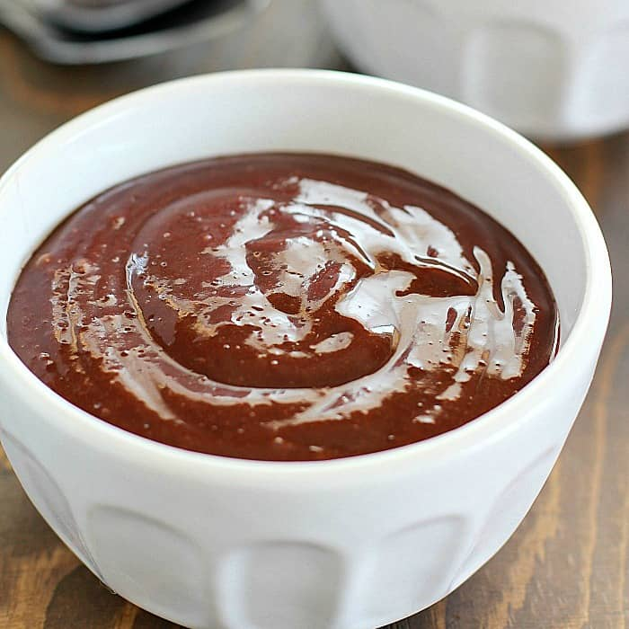

Protein Pudding
This is my not so famous, protein pudding recipe

Recipe Description:
Because I am competing for a bodybuilding show, I am limited to super low calories for the time being.
This recipe takes about 5 minutes to make, and only has about ~150 calories in total. It's delicious, and satisfies my sweet tooth.
You can find the ingredients below.
Ingredients:
- Protein powder of your choice
- Walden farms 0 calorie pancake/maple syrup
- Fruits, preferably strawberries and blueberries. Feel free to experiment.
- Dark chocolate powder
- 0 calorie sweetener
- Strong forearms to stir that bad boy up.
Steps:
- Add 1.5 scoops of protein into a bowl
- Add 5 grams of dark chocolate powder, and one packet of your zero calorie sweetener
- Add a decent amount of walden farm syrup into the bowl
- Stir with a spoon for one minute, until you get a smooth nutella-like consistency
- If your powders aren't breaking down, you need to add more syrup
- Add as many fruits as you like
- Enjoy the deliciousness! Feel free to eat it as is, or use it as a dip for something else
Click here to go back to the recipes page